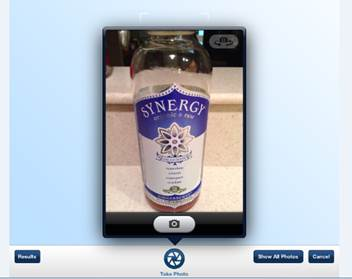
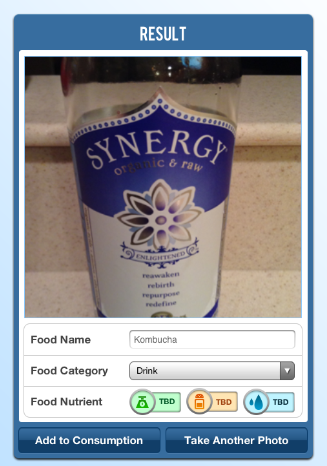
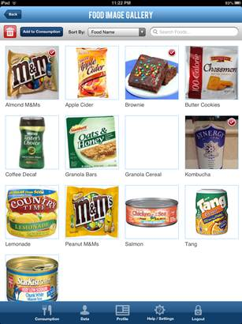
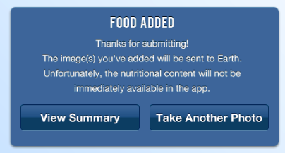

You may enter food items to track by taking a photo of them. However, this current version of the ISS FIT application does not include object recognition so the images will need to be sent to the Earth lab before their nutrition content will be displayed inside the application. Please keep this in mind when you use the "Snap a Photo" food tracking functionality.
To take a photo, click on the camera icon from the Summary page:
Next, click on the "Snap a Photo" button:
Using the iPad camera, take a photo of the food item.

The application will process the photo and display it on the screen:

If the result is correct and you would like to record it, simply enter the food name, select a food category, and click the "Add to Consumption" button. There is also the option to take another photo by clicking the "Take Another Photo" button.
If you click the "Show All Photos" button, the food image gallery will be shown. If you have added foods in the previous screen (Take Photo page), the photos will also be displayed here:

To record the food item to your consumption history select the scanned food items on the results page (a red cherkmark will appear on items you select). Once you have selected all the food items you'd like to record, click the "Add to Consumption" button and the records will be saved:

NOTE: This current version of the ISS FIT application does not include object recognition so the images will need to be sent to the Earth lab before their nutrition content can be determined and included in calculated totals. Also, this data will not be reflected in daily nutrient totals in the ISS FIT application.